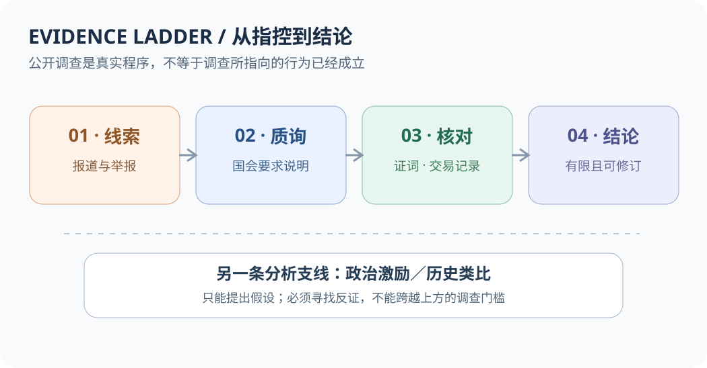

结论先行截至2026年11月24日，国会调查与公司治理变化是真实发生的事；但“已经查实通敌”“25%政府私分”“政客合谋祭旗”等说法并非相同层级的事实。尤其11月23日黄仁勋已获董事会复任，原视频的单向结局叙事需要修订。[S4]
01 · 先把四类论断分开
一段广受传播的政治评论，往往同时包含四种不同信息：确切行政/公司文件、调查中的指控、关于政治动机的解释、历史和文学隐喻。其中第一类可以查证，第二类必须保留程序状态，第三类须寻找能推翻它的替代解释，第四类不能当成现代事实证据。
关键不是先判断谁是“背锅侠”，而是建立事件时间表和每条主张的证据链。尤其不能从调查启动直接推断违法已经成立，也不能从政治人物受益推断其策划了调查。
02 · 可核对的事件时间线
| 日期 | 记录 | 证据所能证明的范围 |
|---|---|---|
| 2026-10-08 | 白宫公布黄仁勋获得国家科学奖章 [S6] | 官方表彰存在；不意味着以后免于审查 |
| 2026-11-05 | 三位众院委员会主席请求11月18日闭门简报 [S1] | 提出要求；并非确认已于18日审讯 |
| 2026-11-08 | 英伟达董事会宣布独立调查 [S5] | 风险受到重视；尚未认定机密泄露 |
| 2026-11-11/12 | SEC备案记录董事会接受黄仁勋辞任 [S3] | 公司治理动作 |
| 2026-11-17 | 国会公布12月1日、2日的访谈安排 [S2] | 计划访谈，尚不是结论或判决 |
| 2026-11-22/23 | 董事会决定并公告恢复黄仁勋CEO职务 [S4] [S11] | 复任成立；不等于独立调查自动结束 |
原评论把11月18日形容成已经发生的联合审讯，与11月17日国会更新后的安排不符。访谈是否按12月计划举行，只能在未来按当日记录更新。[S1] [S2]
03 · 证据层级图：指控不等于事实

众院委员会表述的是国家安全层面的担忧及需要调查的问题；英伟达董事会11月8日称已启动独立调查，并称当时没有理由认为国家安全或公司秘密已经受损。[S1] [S5]
11月23日，特朗普称政府并无黄仁勋违法行为的证据。这是总统的公开立场，而非我们能够替代司法或国会作出的最终认定。[S12] 任何关于第三人情报身份、参与程度和个人违法的主张，都应保留“报道指称／尚无终局结论”的语义。
04 · 25%是税、许可条件，还是私下交易？
2026年1月14日白宫政策说明提到对特定先进计算芯片（包括H200等）实施25%进口关税；2026年3月国会研究处法律分析进一步解释了出口许可、在美检查与入境关税的组合机制及其法律争议。[S7] [S8]
不能把它简化为“英伟达向政客支付25%回扣”。首先，法定关税、许可证安排和私人受贿是三种完全不同的事实命题；其次，税率是否适用于特定货物，还受商品分类、适用例外、跨境路径与法律解释影响。CRS明确讨论了这种安排的潜在法律挑战，争议存在不等于任何一方已经违法获判。[S8]
| 论断 | 目前证据等级 | 仍需什么 |
|---|---|---|
| 有关联的芯片关税与许可安排 | 官方政策可证 | 具体许可证与适用清单 |
| 关税作为制度激励造成扭曲 | 机制推论 | 政策前后反事实和实际贸易数据 |
| 官员私下瓜分关税收入 | 未核实 | 支付记录、调查和司法证据 |
05 · PJM电价案例：单位与因果不可偷换
PJM在2025年7月22日披露，面向2026/2027交付年度的容量市场拍卖清算价格达到经监管批准的329.17美元／MW·日上限；与上一交付年度的269.92美元／MW·日比较继续上涨。[S10]
这一数字是容量市场支付价格，不是居民每千瓦时电价，也不是现货能量批发价。不能把“从29涨到329”的跨年对比，直接写作居民电费十倍；更不能把所有上升归因于一种数据中心需求。需要同时检查新建电源延迟、负荷预测、退役、输电约束、拍卖设计和成本在零售端的传导。
06 · 选举冲击能解释调查启动吗？
2026年11月德州选举中，民主党候选人 James Talarico 击败共和党候选人 Ken Paxton，选举结果有同期报道。[S9] 这会影响政治激励，但选举发生在调查前后，不足以证明调查是“选举失败后设计的替罪羊机制”。
可以构建三个竞争解释：A. 面临选举压力的政客寻找问责对象；B. 相关事实材料和议程本身促使国会正常展开跨党派安全审查；C. 两者同时存在。需要委员会此前的调查历史、联署文件、内部时间线和政策投票行为来区分，而非只比较事件相隔几天。
07 · 历史类比的有效范围：桑弘羊、汪直与文学人物
原材料以古代财政代理人、海上贸易与一部历史剧中的虚构角色作为现代硅谷政治的“镜像”。这种叙事能够提醒我们关注委托—代理问题、分配冲突、问责转移和声誉风险，但相似的戏剧结构不等于有相同的决策过程。
三国“借粮官人头”的流行故事包含文学化叙事，不能作为现代政治必然发生“替罪羊式惩罚”的历史证据；桑弘羊与汪直的具体史实则需分别以可定位史料重建，不能凭短视频中未经标注的台词和年代推导。
更合适的用法是把类比改成一张可证伪的问题表：谁从安排中收益？谁有正式决策权？谁承担可观察的代价？如果不存在秘密分赃记录，是否还能用监管竞争与选举问责解释事件？
08 · 反证：复任与调查并行
2026年11月23日英伟达公告，董事会已恢复黄仁勋担任CEO与董事，并称其决定过程中听取了美国政府高层意见。[S11] 这一反证直接削弱了“政治机器已决意不可逆转地将其牺牲”的强叙事，但复任本身也不证实所有指控虚假。
复杂政治商业事件中，同一时期可以同时出现合规调查、政策争议、董事会权衡和政治支持。最终判断必须等到访谈笔录、监管决定和独立调查结果可取得后再更新。
09 · 结论与开放问题
本轮已经确认：国家奖章、国会质询安排、SEC高管变更、复任公告、芯片关税安排与PJM容量市场数字，均有可追溯来源。但视频的核心戏剧化结论——秘密合谋、所有政客共享分赃、精心设计的政治祭旗——目前缺乏足够一手证据。
待追踪：12月1日国会访谈是否如期进行？公司独立调查如何结案？关税安排的司法审查是否推进？出口数据及许可证公开到什么程度？这些未来节点比继续延伸文学比喻更能改变判断。
一手资料与独立报道
- [S1] 美国众议院情报委员会，2026-11-05 委员会要求英伟达提交闭门简报的声明（2026-11-05）；原始来源。定位：质询请求和11月18日提议日期。
- [S2] 美国众议院情报委员会，2026-11-17 确认 12月1日与12月2日访谈安排（2026-11-17）；原始来源。定位：公告正文。
- [S3] 美国证券交易委员会 SEC，NVIDIA Form 8-K dated November 11, 2026（2026-11-12）；原始来源。定位：董事会接受辞任记录。
- [S4] 美国证券交易委员会 SEC，NVIDIA Form 8-K dated November 22, 2026（2026-11-23）；原始来源。定位：复任记录。
- [S5] 英伟达董事会，Statement from NVIDIA Board of Directors（2026-11-08）；原始来源。定位：独立调查启动，未确认安全泄露。
- [S6] 美国白宫，President Trump Presents National Medals of Science and Technology（2026-10-08）；原始来源。定位：奖章名单。
- [S7] 美国白宫，Fact Sheet: Certain Advanced Computing Chips Tariff（2026-01-14）；原始来源。定位：25%关税政策。
- [S8] 美国国会研究处 CRS（独立存档），Legal Authority for Export Controls and Tariffs on Semiconductor Chips Sold to China, LSB11409（2026-03-23）；原始来源。定位：报告第1–6页与法律疑问；访问独立镜像。
- [S9] The Texas Tribune，James Talarico defeats Ken Paxton in Texas Senate race（2026-11-03）；原始来源。定位：选举结果；不证明委员会调查动机。
- [S10] PJM 电网运营商，2026/2027 Base Residual Auction news release（2025-07-22）；原始来源。定位：容量价格329.17美元/MW·日。
- [S11] 英伟达投资者关系，NVIDIA Board Reinstates Jensen Huang（2026-11-23）；原始来源。定位：董事会复任及接受政府意见的声明。
- [S12] CBS News，Trump says government does not possess evidence Huang engaged in unlawful conduct（2026-11-23）；原始来源。定位：对总统表态的报道，属于当事方声明。